Road to JavaScript Maker
用JavaScript實現微電腦自動控制不是夢！
Hello, JSDC 2015
Cheton Wu (吳奇潭)
Works at Trend Micro (since 2002)
JavaScript at work
Woodworking Enthusiast
DIY electronics: Arduino, Robotics
Why not combine them together?
JavaScript is Everywhere

var arDrone = require('ar-drone');
var client = arDrone.createClient();
client.takeoff();
client
.after(5000, function() {
this.clockwise(0.5); // range from 0 to 1
})
.after(3000, function() {
this.animate('flipLeft', 15); // 15ms
})
.after(1000, function() {
this.stop();
this.land();
});
Any application that can be written in JavaScript, will eventually be written in JavaScript.
– Jeff Atwood, 2007想用JavaScript統治物聯網之前
你首先要知道...
如何用微處理器(Arduino)
去控制電路元件
如何建立一個
可以正常運作的電路
如何運用JavaScript
跟Arduino建立通訊
Arduino


Arduino Board
Arduino IDE
Arduino Board
Arduino Uno R3 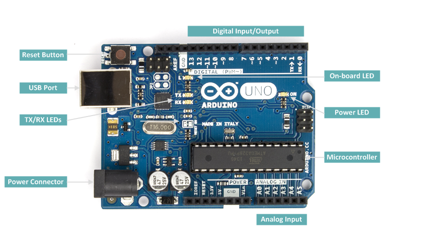
Arduino Uno R3 (Back) 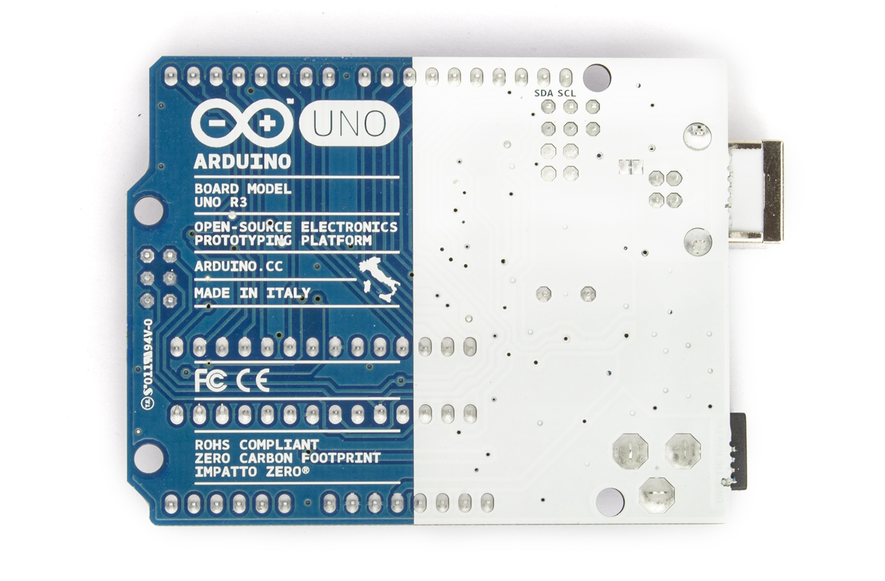
Arduino Nano
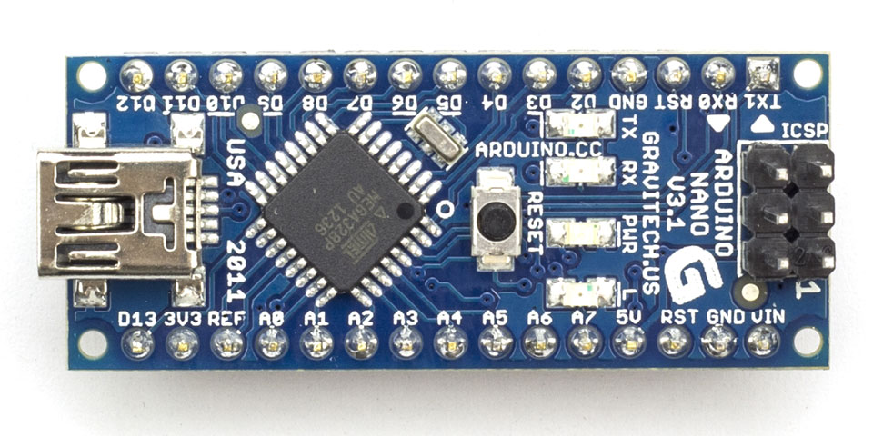
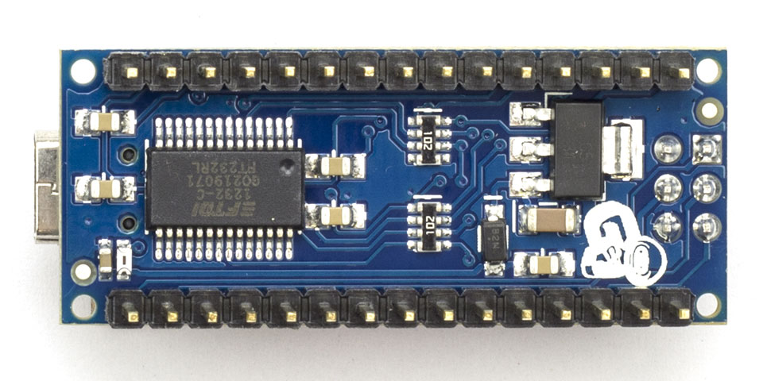
Arduino Nano Expansion 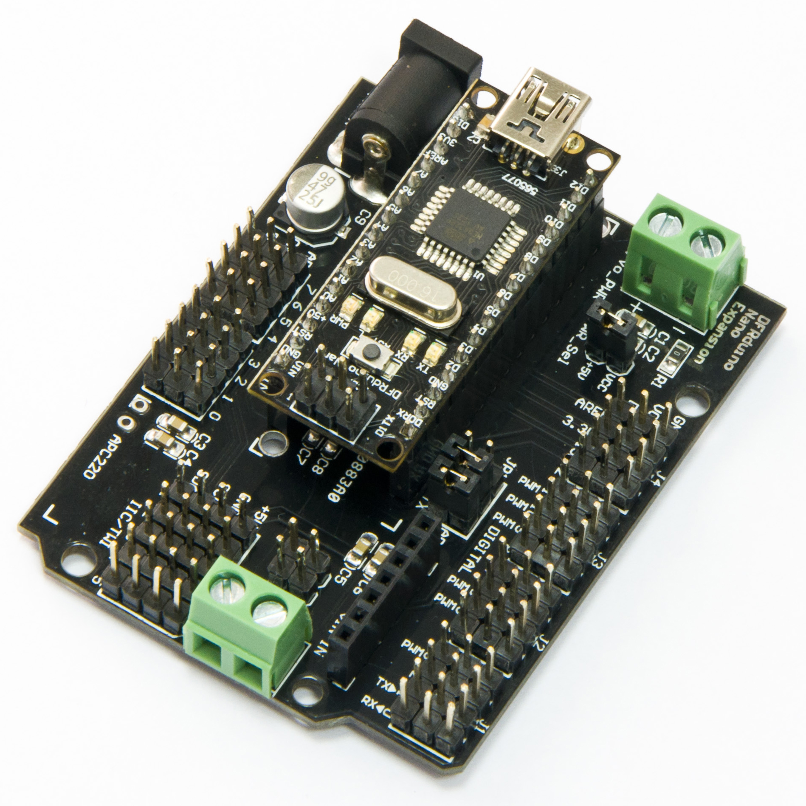
Arduino IDE
Board
Port
Blink
Firmata
基礎套件
- Arduino UNO R3
- USB Type-A 傳輸線
- 麵包板(Breadboard)
- 麵包板跳線(Breadboard jumper wires)
- 發光二極體LED
- 330/1K/10K歐姆(Ω)電阻
- 安全防護眼鏡
- 剪線虎鉗
體驗價不到1K
The Ultimate Kit
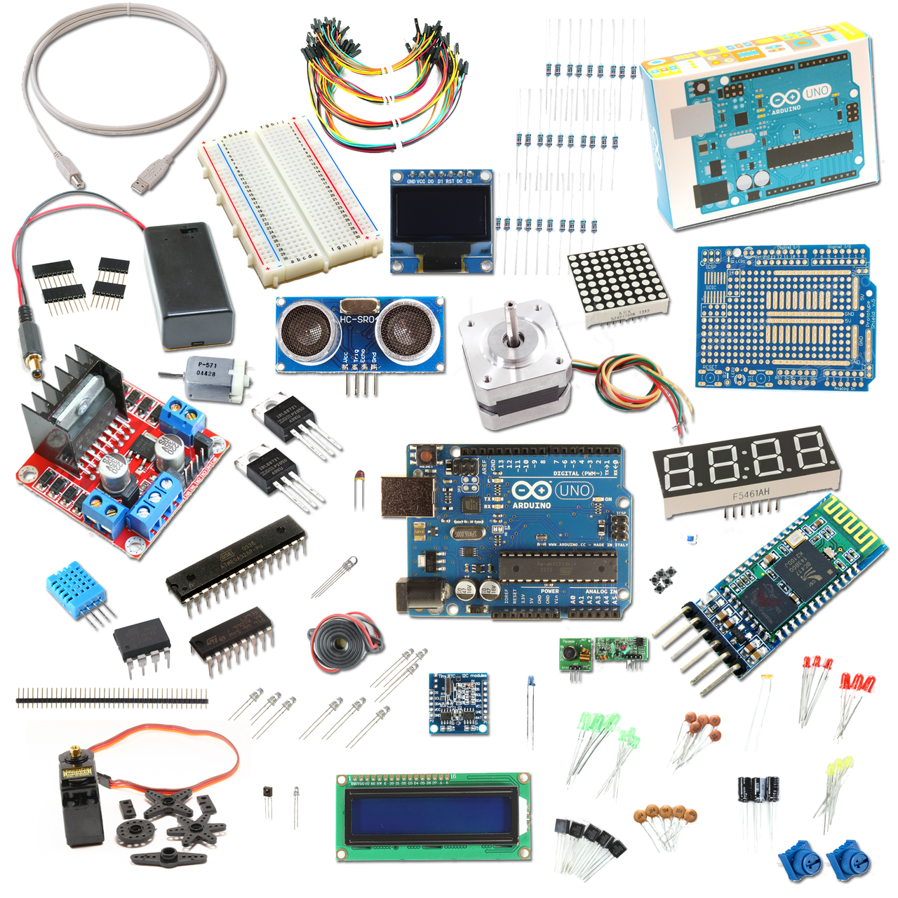配原廠Arduino UNO約100美金
Direct Serial Port Access
var SerialPort = require('serialport').SerialPort;
var board = new SerialPort('/dev/tty-usbserial1', {
baudrate: 115200
});
board.on('data', function(data) {
console.log('data:', data);
board.write('It works!\n');
});
board.on('error', function(err) {
console.log('error:', err);
});
Take Your Chance
Johnny-Five
The JavaScript
Programming Framework

Rick Waldron
npm install johnny-five
Supported Hardware
LED
DC Motor
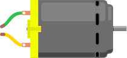Servo Motor
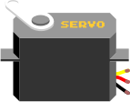Stepper Motor
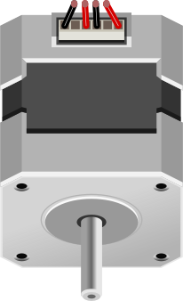LCD
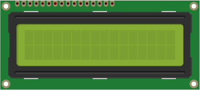
Accelerometer
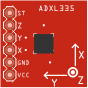Compass
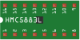Joystick
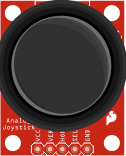http://johnny-five.io/examples/
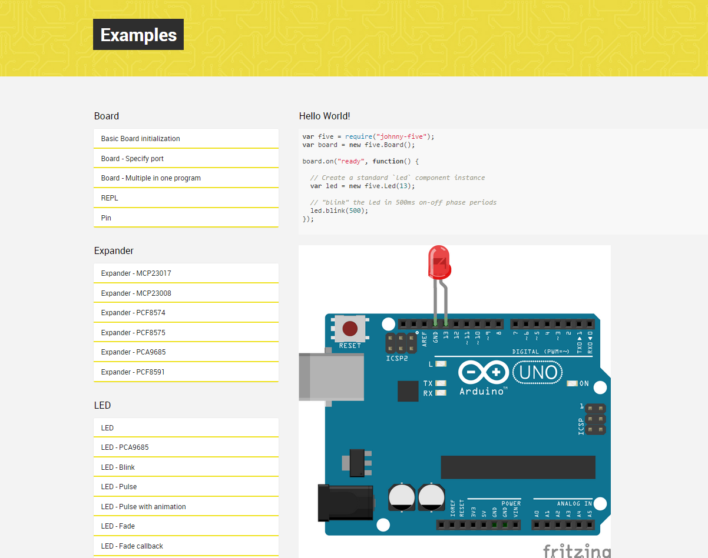LED

https://github.com/rwaldron/johnny-five/wiki/LED
var five = require('johnny-five');
var board = new five.Board();
board.on('ready', function() {
// Creates a led object on pin 13
var led = new five.Led(13);
// "blink" the led in 500ms on-off phase periods
led.blink(500);
});
Node.js REPL Terminal
board.on('ready', function() {
var led = new five.Led(13);
this.repl.inject({
// Allow limited on/off control access to the
// Led instance from the REPL.
on: function() {
led.on();
},
off: function() {
led.off();
}
});
});
$ node led.js
>> on() // will turn on the LED
>> off() // will turn off the LED
Motor
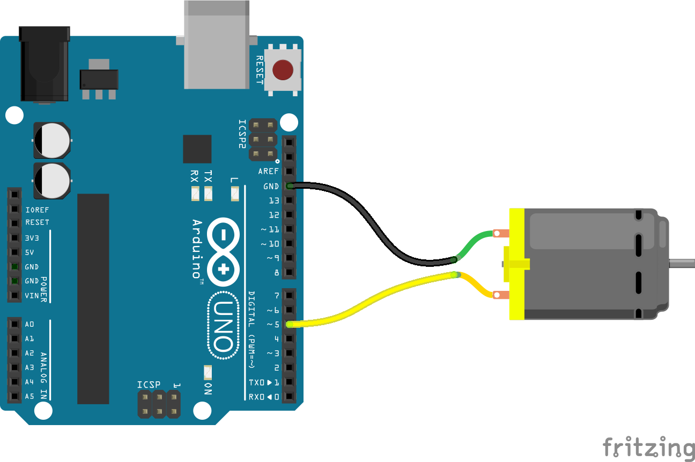https://github.com/rwaldron/johnny-five/wiki/Motor
var five = require('johnny-five');
var board = new five.Board();
board.on('ready', function() {
var motor = new five.Motor(5);
motor.on('start', function() {
// Demostrate motor stop in 2 seconds
board.wait(2000, function() {
motor.stop();
});
});
// Start the motor at maximum speed
motor.start(255);
});
Servo
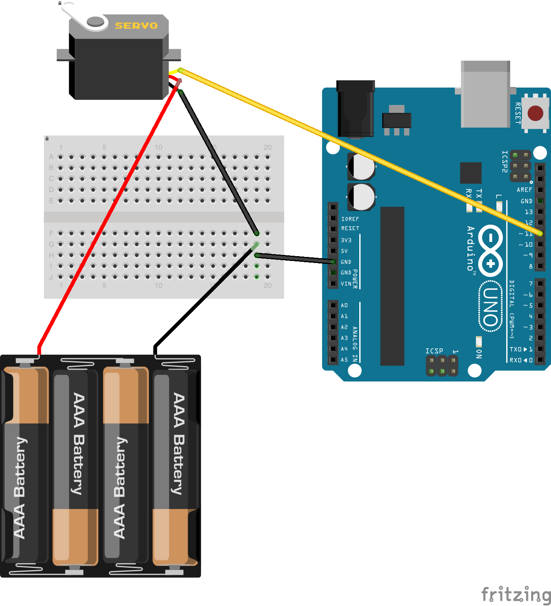https://github.com/rwaldron/johnny-five/wiki/Servo
var five = require('johnny-five');
var board = new five.Board();
board.on('ready', function() {
var servo = new five.Servo({
pin: 11,
range: [0, 180]
});
// Set horn to 45°
servo.to(45);
// Angle change takes 500ms to complete
servo.to(60, 500);
// Set horn to 90°
servo.center();
});
Temperature
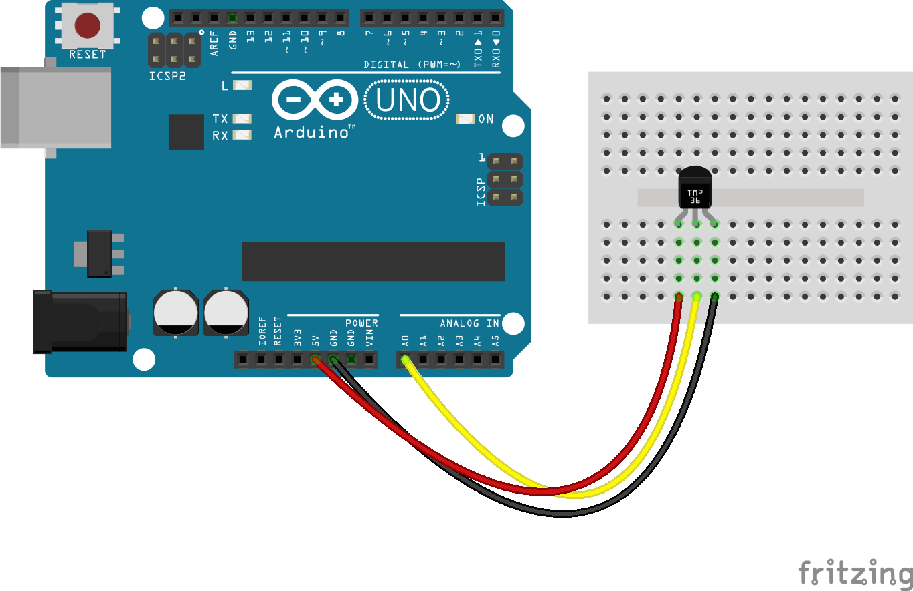https://github.com/rwaldron/johnny-five/wiki/Temperature
var five = require('johnny-five');
var board = new five.Board();
board.on('ready', function() {
var temperature = new five.Temperature({
controller: 'TMP36',
pin: 'A0'
});
temperature.on('change', function() {
console.log('Celsius: %d', this.C);
console.log('Fahrenheit: %d', this.F);
console.log('Kelvin: %d', this.K);
});
});
LCD - I²C

https://github.com/rwaldron/johnny-five/wiki/LCD
var five = require('johnny-five');
var board = new five.Board();
board.on('ready', function() {
var lcd = new five.LCD({
controller: 'PCF8574', // I²C LCD, PCF8574
rows: 2,
cols: 16
});
lcd.cursor(0, 0) // Sets the cursor position
.print('Loading...');
this.wait(1000, function() {
lcd.clear() // Clears all text on the LCD
.home() // Sets the cursor position to row 0, column 0
.print('Hello, JSDC 2015');
});
});
Live Demos
IoT Weather Display
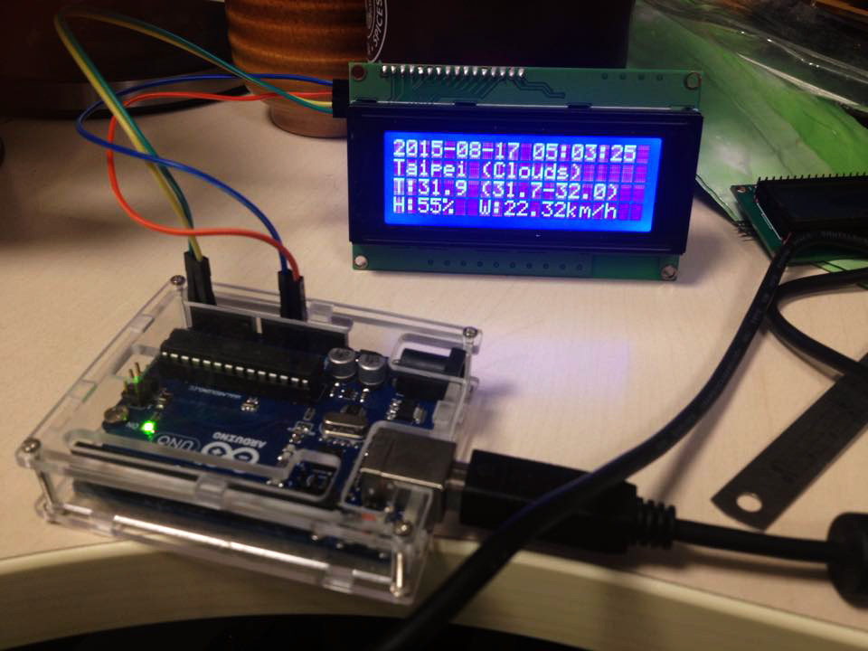 GitHub
GitHub
https://github.com/cheton/iot-weather-display
機器手臂能做些甚麼呢？
沒錯！好吃又好玩！
GitHub
https://github.com/cheton/robotarm
Control Robot Arm with Joystick
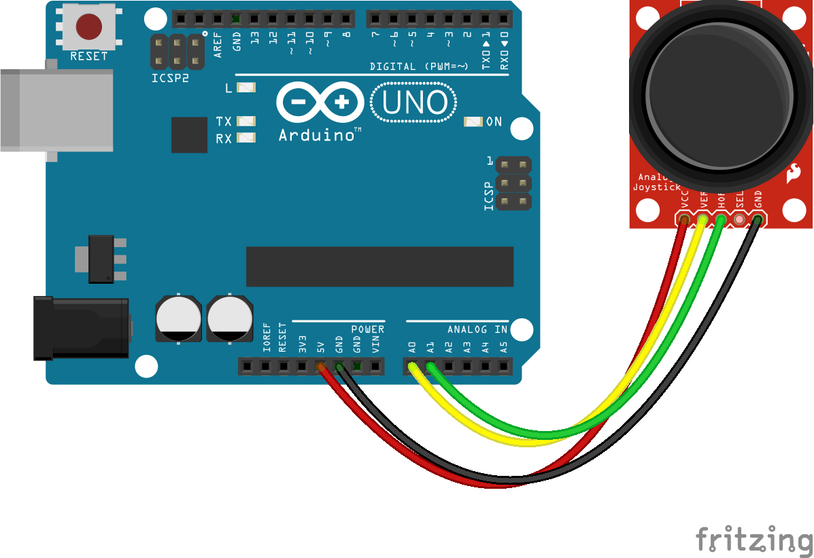
var five = require('johnny-five');
var board = new five.Board();
board.on('ready', function() {
// Claw servo controller
var claw = new five.Servo(11);
// Joystick controller
var joystick = new five.Joystick({
pins: ['A0', 'A1'] // X (claw), Y (none)
});
// Center the claw servo
claw.center();
joystick.on('change', function() {
var degree = five.Fn.scale(this.x, -1, 1, 130, 180);
claw.to(degree); // Range: 130°-180°
});
});
還記得前面提過的...
你能想像JavaScript也可以幫忙做木工嗎？
GitHub
https://github.com/cheton/cnc.js
CNC.js

Q&A
The Internet of Things (IoT)
will be created by the people
who know the Internet best.
Backup Slides
Communicating Over WiFi
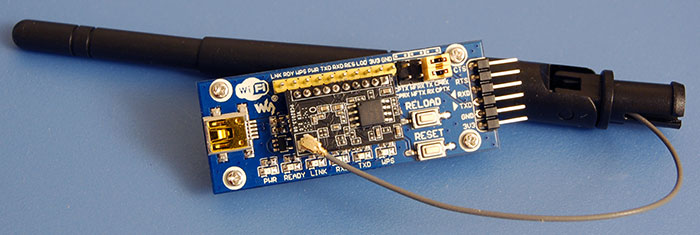Module Setup (w/ Breakout Board)
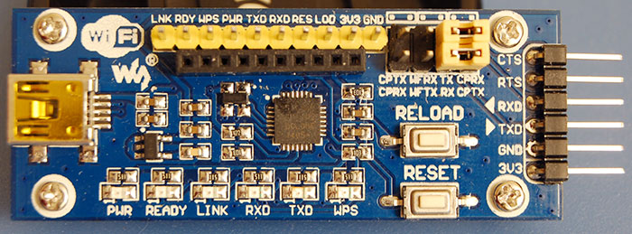Johnny-Five Setup
-
Use
socatto fake a serial terminal:socat -d -d pty,nonblock,link=$HOME/dev/ttyV0 tcp:10.0.1.12:8899
-
Execute it like this:
node blink.js ~/dev/ttyV0
Firmata Protocol
The Firmata library for Arduino
https://www.arduino.cc/en/Reference/Firmata
Example
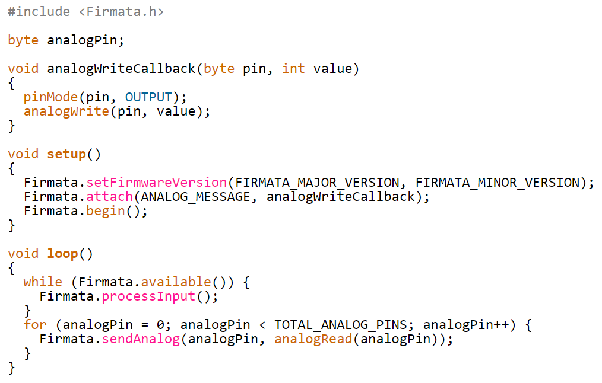The Firmata library for Node.js
https://github.com/jgautier/firmata
A Node library to interact with an Arduino running the firmata protocol.